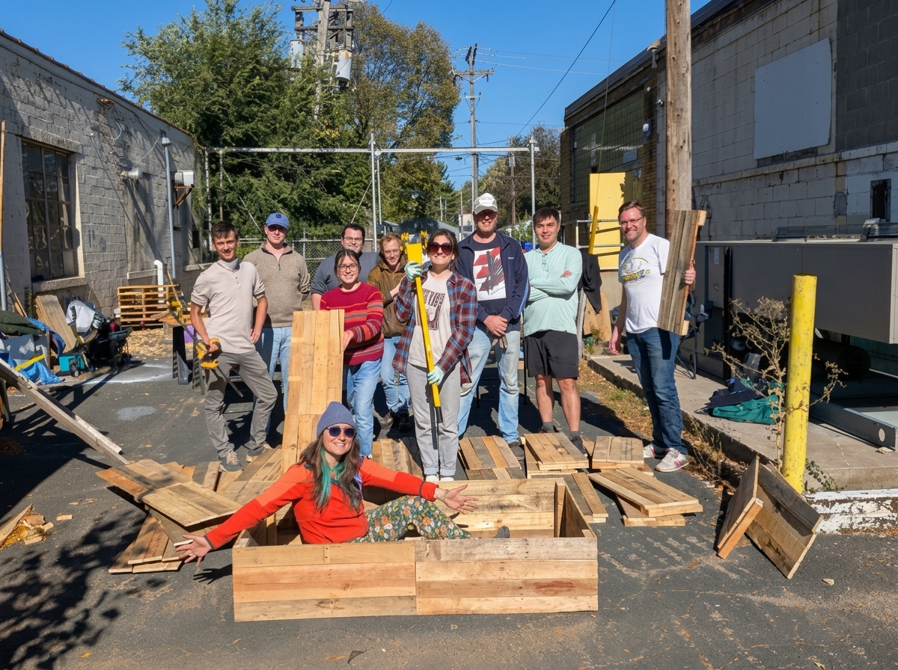
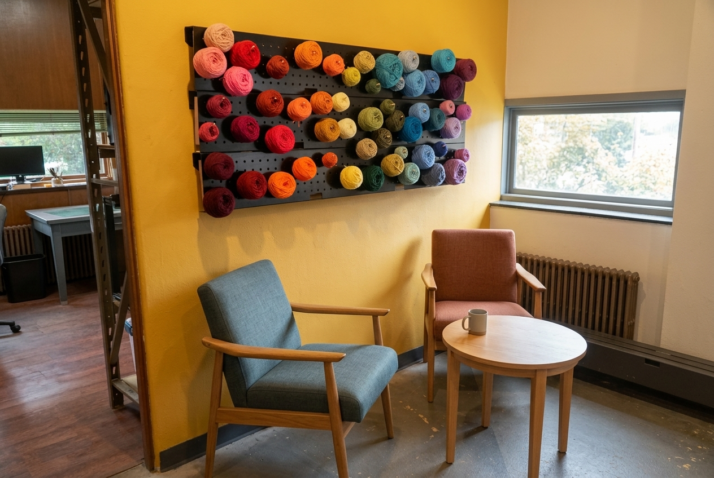

Seward Neighborhood • Minneapolis, MN
Make anything, together, at Twin Cities Maker.
A welcoming, volunteer-run community makerspace where artists, crafters, engineers, and first-time builders share 24/7 studios—from sewing, stained glass, and ceramics to woodworking, laser cutting, and metal.
- Wednesdays, 7–9 PM Free drop-in tours & community night
- $85/mo or Sliding Scale Member-Supported & +$25 partner tiers
- 9 Shared Studios 24/7 access after orientation


A Space Built for Every Kind of Maker
More than a woodshop—a creative third place.
Whether you’re mending a coat in the Soft Room, winding rainbow yarn in the sunlit lounge, throwing pottery, learning stained glass, or milling aluminum, you’ll find friendly mentors ready to help you get started safely.
-
Beginner-friendly checkouts
No prior experience required—attend a Wednesday tour and sign up for hands-on safety trainings.
-
Zero-barrier pricing options
Need-based Member-Supported dues and a +$25/mo +1 option let you create alongside someone you care about.
-
Accountable, member-led culture
Guided by our Code of Conduct, elected volunteer leadership, and transparent community feedback channels.
9 Shared Studios Under One Roof
What will you make next?
-
Artifactory & Soft Room
Industrial & domestic sewing machines, leatherworking, screen printing, stained glass, jewelry, lapidary, and picture framing.
Explore Artifactory -
3D Lab & Laser Cutting
Precision laser cutters for wood, acrylic, leather, and fabric alongside multi-material 3D printers and filament recycling.
Explore 3D & Laser -
Woodworking & CNC
Cabinet-grade saws, planers, jointers, routers, lathes, and large-format CNC routing for furniture and custom builds.
Explore Wood & CNC -
Metal, Welding & Forge
MIG/TIG welding booths, plasma cutting, sheet-metal fabrication, and blacksmithing forges.
Explore Metal & Forge -
Electronics & Machine Shop
Oscilloscopes, soldering rework stations, manual & CNC mills, metal lathes, and precision metrology.
Explore Electronics & Machining -
Classes, Open Circuits & Events
Public workshops in welding, woodworking, bookmaking, and fiber crafts—open to non-members and members alike.
Browse upcoming classes
Simple Path to Joining
From first visit to 24/7 studio key fob in 3 steps
-
Visit an Open House
Stop by 3119 E. 26th St any Wednesday between 7:00–9:00 PM for a guided tour and meet volunteer makers.
-
Complete Waiver & Orientation
Sign our community registration & waiver, then attend a friendly New Member Orientation to pick up your key fob.
-
Take Safety Checkouts & Create
Join studio safety trainings, pitch in with community upkeep, and build whenever inspiration strikes—day or night.
Good to Know
Frequently asked questions
New to shared workshops? Here’s what to expect on your first visit to Twin Cities Maker.
Do I need experience before visiting or joining?
Not at all! Many members arrive with zero shop experience. Our Wednesday Open House tours, public classes, and hands-on studio checkouts are designed to help beginners build confidence safely.
Can I sign up just to rent a tool for one afternoon?
We’re a volunteer-run educational nonprofit rather than an on-demand rental shop, so members attend an orientation and safety checkouts before using equipment—which keeps everyone safe and our tools running smoothly.
Can non-members take classes at Twin Cities Maker?
Yes! Most classes—from introductory welding and woodworking to stained glass and bookmaking—are open to the general public as well as members.
How do Member-Supported and +1 memberships work?
Anyone who needs financial flexibility can request Member-Supported discounted dues—no student or senior ID required. Full members can also add a +1 partner, friend, or family member for $25/month to create together.